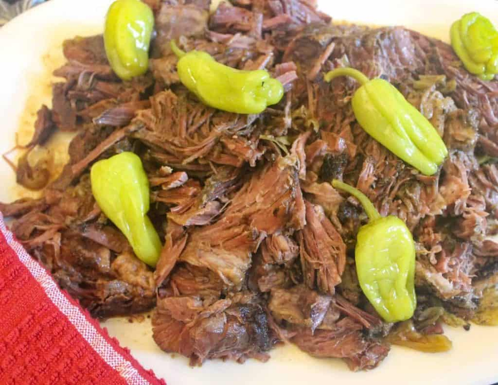

Polish Pot Roast

Like the Missippi Pot Roast, the Polish Pot Roast has pepper corns but, adds dill pickles and mushrooms to give
it a unique flavor. The Polish Pot Roast is a great way to enjoy a meal with friends or family.
Ingredients
- 3 pounds beef
- 1 onion (Chopped)
- 3 dill pickles
- 1/2 oz dried mushrooms
- 6 - 12 pepper corns
- bay leaves (a couple)
- 1 cup of bullion stock or bovril
Directions
- Chop beef, pickles, and onion and add to pot.
- Add all ingredients to a large pot and bring to a boil.
- Turn to med heat cover pot and cook for 2 hours.
- Remove pot from heat and let rest for 10 minutes.
- Can be served with egg noodles or whatever you choose.